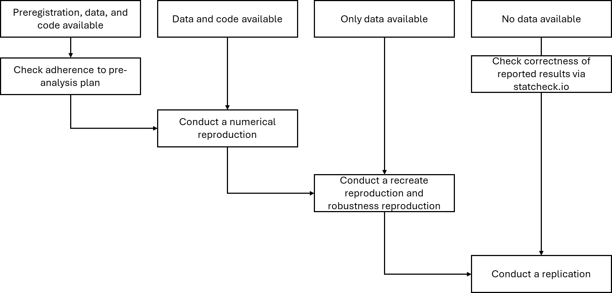

4 Choosing the Target Study
Reproduction and replication studies can serve different goals and depending on the goal, the way of choosing a target study differs (see Pittelkow et al. 2023). In large-scale reproduction and replication projects, such as Brodeur et al. (2024), the Reproducibility Project: Psychology (Open Science Collaboration, 2015) or the Reproducibility Project: Cancer Biology (Errington et al., 2021), the primary aim is to assess the overall reliability of a field or a set of findings, leading to a top-down approach in which the decision to replicate comes first, followed by the selection of specific replication targets. This is often done in a way aimed to be representative of a field, ideally through random sampling, though this is generally constrained by practicalities. Here, individual studies are not the primary focus in the decision to repeat; instead, choices are guided by broader methodological or theoretical considerations. In contrast, individual researchers frequently adopt a bottom-up approach, where the decision to replicate is driven by engagement with a specific study (or theoretically related set of studies, e.g., Röseler, et al., 2021). This may occur when a researcher wishes to build upon an existing finding and seeks to verify its robustness before doing so, or when they harbor doubts about a claim and aim to test its validity. Since reproductions and replications can serve multiple purposes—from assessing theoretical frameworks to correcting potential errors—there is no singular correct way to decide what to repeat. The choice of targets ultimately depends on the overarching goals and methodological approach of the replication effort, as well as on practical constraints. However, what does matter is that the selection of reproduction and replication targets is well justified and transparently communicated. For instance, researchers can use structured frameworks such as the replication target selection checklist to ensure clarity and consistency in their decision-making process (Pittelkow et al. 2023). For a comment on what empirical reasons for replications are, see Kamermans et al. (2025).
4.1 Determining Reproduction and Replication Value
Whether a target study is “worth reproducing” or “worth replicating” is highly debated and is suggested to depend on several overlapping factors, including value (sometimes also referred to as impact or relevance), uncertainty, and feasibility (Isager et al. 2023). Below, different suggestions for operationalizing these factors are discussed systematically.
Note that there is also ongoing discussion about whether or not all studies are generally ‘worth replicating’. One perspective is what is worthy of publication is worthy of replication (Feldman, 2025) or on a different note, what is worthy of publication should be worthy of replication - though this perspective is becoming complicated through the rise of influential preprints and a public-review-curate model to publications. Naturally, a public report of a study is necessary for other researchers to attempt a replication and an available dataset is needed for a reproduction. To take a more fine-grained look at the publication status, several different types of research emerge. An article can be retracted, that is, there is no confidence anymore in its findings due to research misconduct or severe errors. When the data of a study were fabricated and it was thus retracted, a reproduction will not be informative but a replication may inform researchers about the correctness of the hypothesis unlike the original report. Other reasons (or unclear reasons) for retraction may conversely increase the replication and reproduction value, as the source of a true claim may have become untrustworthy (and not easily citeable) due to issues unrelated to its truth (e.g. plagiarism).
Replicating and reproducing every finding that was ever published appears impossible to achieve, which is why researchers need to make decisions about prioritization. In the following, we discuss criteria by which such a prioritization can occur - restricted to quantitative research.
4.2 Value
The original study should be somehow relevant for the replication to have value (e.g., Karhulahti et al., 2024). It may have started a research stream. For example, Jacowitz and Kahneman’s (1995) studies on anchoring and adjustment were fundamental for how anchoring effects are investigated today, and were therefore replicated by Klein et al. (2014). Field et al. (2019) propose a method for the selection of replication studies that features the theoretical importance of the original study result. Relevance may be evidenced by many citations as they show that many studies are building on the finding, testing similar hypotheses, or criticizing the study. Note that a study could also be cited as a negative example or study that has not been replicated or retracted for some reason. Isager et al. (2021, 2023) suggest deciding what to replicate based on sample size and citation count (but see Pittelkow et al., 2025). In a Delphi study examining consensus among psychologists that had conducted empirical replications on what should influence the decision of what study to replicate, elements that came up were the importance of the original study for research (as indicated by citations, the phenomenon being over- or understudied, and the impact factor of the journal), the theoretical relevance of the study, and the implications of the original study for practice, policy, or clinical work (Pittelkow et al., 2023). The relevance of societal impact was also stressed by Bekker (2024), as a study may have a high value for a societal problem (e.g., a new vaccine or a repeated test of a claim that is relevant in the political discourse such as criminality among immigrants).
For scientists reproducing or replicating a study because they are interested in building on its findings (including if they wish to build upon their own original findings), their interest to build on it may be a sufficient indicator of its relevance to their research program.
4.3 Uncertainty
The more uncertain the original study’s outcome is, the higher the potential of knowledge gained from reproduction and replication. Although no findings are definitive, research reports differ in the strength of the evidence they present (e.g., Registered Reports[^3] are typically more convincing than non preregistered studies; Soderberg et al., 2021). Similarly, sample size (within a given field) has been proposed as an indicator of evidence strength (Isager et al., 2021). Pittelkow et al. (2021, 2023) and Field et al. (2019) both argued for using the current strength of evidence in favour of the original claim as an important element that features into the choosing a replication target. However, the degree of uncertainty can be uncertain or misjudged: In some areas of research a hypothesis had been claimed to be confirmed hundreds of times and yet, large-scale replication effort could not support the original hypothesis so that after hundreds of studies the existence of the phenomenon was still unknown (e.g., Friese et al., 2019). Meta-analyses allow some tests for uncertainty (e.g. via correction of bias, evaluation of risk of bias, or estimates of heterogeneity). Although there are numerous ways to meta-analytically evaluate the expected replicability of a set of claims, none of them is as solid as a well-designed replication attempt (Carter et al., 2019). Other heuristics to estimate robustness reproducibility and replicability of sets of findings have been proposed:. They include the caliper test, relative proximity, or z-curve (Bartoš & Schimmack, 2022; see Adler et al., 2023, for an overview and a ShinyApp that combines these tools). Individual findings can be assessed through forensic meta-science tests (for an overview, see Heathers, 2025), and through the assessment of papers for reporting issues, such as those identified by statcheck (Nuijten et al., 2017; DeBruine & Lakens, 2025). Moreover, methods such as sum of p-values (Held et al., 2024) and Bayesian re-analysis can be applied to help determine the degree of evidence for a given effect an original study might contain (Field et al., 2019, Pittelkow et al., 2021).
If the original paper reports multiple studies for the same phenomenon, researchers should check the proportion of significant studies and whether all of them confirm the hypothesis. More studies reduce the overall statistical power (power deflation). Provided the hypothesis is correct, a single study may test it with 90% power, that is, the statistical analysis will indicate the correctness of the hypothesis with a probability of .9. Now, if 10 studies are run with 90% power each, the chances of all of them supporting the hypothesis (even if it is true) are 0.9^10 = .35. For 80%, even finding five significant findings in a row is fairly highly unlikely (0.8^5 = .33). Thus, studies reporting a set of many and only significant findings when each of the studies does not have very high power should be taken with caution (see also Francis, 2012; Schimmack, 2012; Lakens & Etz, 2017).
For large parts of the literature and given the overall low replicability rate in many fields (though not all, e.g., Soto, 2019), the mere lack of a reproduction or close replication by independent researchers can be used as an argument for uncertainty (e.g., Pittelkow et al., 2023). If a study has only been replicated by the original authors, it can be indicative of nobody else being interested in the phenomenon (i.e., low replication value) or nobody else being able to provide evidence for it (i.e., high uncertainty). For example, it is possible that reports of failed replications are held back by reviewers due to an aversion to null findings, replications, or findings criticizing their own work.
As replications can also be used to probe a phenomenon’s generalizability, a lack of variety in study designs can motivate a replication attempt. If there is reason to assume that a phenomenon is highly dependent on context (e.g., works only for graduate students, with English-speaking people, when people are incentivized, for the chosen stimuli, …), it can be replicated and extended in other contexts. More generally, when background factors are introduced to a study (e.g., there was a positive correlation in study X but researchers suspect it to vanish under condition M), the original finding needs to be replicated in a part of the new study for the argument to work. An added benefit of this is to help avoid later claims of ‘hidden moderators’ in original studies; an argument which has been used previously to refute the validity of replication study results (Zwaan, et al., 2018).
Finally, uncertainty can be the result of a lack of specificity in the original report: If there are details missing that cannot be retrieved anymore (e.g., researchers involved in the original study cannot be reached), a replication can develop, test and share a comprehensive set of materials. For example, Chartrand and Bargh’s (1999) seminal study on the chameleon effect requires many materials but none of them are openly available. Accordingly, Pittelkow et al. (2023) identified the clarity of the original study protocol as an important element that features into the decision of replication study selection. Reconstructing these materials and documenting a procedure would, thus, be a valuable contribution of a replication study.
Theoretical contribution
In some cases, theories are so vague that a failed replication would likely be criticized for misunderstanding the theory (e.g., Baumeister & Vohs, 2016). This suggests that the target theory was not well specified. If accepted as a reason not to replicate, it can discourage any form of replication despite the target finding being relevant. Instead, replication researchers can ask original authors for feedback on the study protocol before collecting data to try to ensure that it tests (and then articulates) the intended theory. They can also engage in adversarial collaboration or “red teaming” (e.g., Cowan et al., 2020), that is work together with the original authors to design a study that they agree would be able to corroborate the original claim, or to call it into doubt.
Nevertheless, it has been argued that because so many original studies are flawed, the theories built upon them are weak, or contaminated. This, in turn, can lead to flawed replication studies, especially in the case of theory that aims to explain phenomena (Field et al., Volz, Kaznatcheev & van Dongen, 2024), risking a vicious cycle in which successful replications potentially perpetuate flaws across studies.
Availability of reproductions and replications
While a single replication (or robustness reproduction) cannot provide conclusive evidence in regard to the veracity of original claims, the first numerical reproduction, and arguably also the first robustness reproduction and replication adds the greatest value in terms of reducing uncertainty. Therefore, the search for existing reproductions and replications is a key part of the selection of a target study.
Although there is no comprehensive database with reproductions yet, researchers can check resources such as the Institute for Replication’s discussion paper series (https://i4replication.org/discussion_paper.html; Brodeur et al., 2024), the ReplicationWiki (Höffler, 2017), the CODECHECK register (https://codecheck.org.uk/register/, Nüst & Eglen, 2021), or the Social Science Reproduction Platform (https://www.socialsciencereproduction.org).
With regard to replications, researchers can browse the FORRT Replication Database (https://forrt-replications.shinyapps.io/fred_explorer/; Röseler et al., 2024), though this does not (yet) provide a replacement for manual searches.
4.4 (Potential) Researcher Bias {#(potential)-researcher-bias}
Researchers typically work in relatively small communities to investigate the same phenomenon. These researchers are invested in their work and can be influenced by certain researcher biases, such as confirmation bias (the tendency to preferentially seek out, evaluate and recall information that supports one’s existing beliefs; e.g., Mahoney, 1977) and motivated reasoning (generating post-hoc rationalizations that frame previous decisions in a favourable light; see Hardwicke & Wagenmakers, 2024; Munafò et al., 2020). In some cases, researchers profit off their work and the (perceived) replicability of their findings may be associated with personal financial gain. Such conflicts of interest should be disclosed, but this is not always the case (see Heirene et al., 2024).
However, replication researchers are just as prone to bias as original authors can be. Certain studies are more likely to be chosen for replication than others (see Pennington, 2023; Yarkoni, 2013), and there may be a publication bias in replication studies in favor of nonsignificant findings (Berinsky et al., 2020), though there is no empirical evidence for this yet. Nevertheless, greater interest in failed replications seems very likely, incentivizing replication researchers to apply questionable research practices (QRPs) so that the results are nonsignificant (“null hacking”, Protzko, 2018; Baumeister et al., 2022). The problems of p-hacking and null-hacking can mostly be solved through preregistration and the use of Registered (Replication) Reports (e.g., Brodeur et al., 2024; Soderberg et al., 2021). Another type of bias is that researchers may be interested in replicating specific studies because of personal admiration towards a study or personal doubts or envy towards a colleague.
4.5 Feasibility
Reproductions require the original dataset. We recommend that researchers check whether the journal that published the original study has a data editor or reproducibility manager who has done a reproducibility check or provides a replication package. A replication package is a collection of materials to allow reproduction of the original results. Ideally, the dataset in the replication package, or shared separately, adheres to the FAIR criteria (Wilkinson et al., 2016), that is, it should be findable, accessible, interoperable, and reusable. Otherwise, the reproduction author would need to send a data sharing request to the original authors. In any case, they may need to consult with the original authors regarding software versions and code that does not work anymore due to changes in the software.
While original data is not necessary for replications, thorough documentation of the original study is highly beneficial. Moreover, replication researchers should evaluate whether they can achieve the target sample size, which is often a multiple of the original sample size (see section Sample Size Determination). Pittelkow et al. (2023) identified the resources available to the replicating team in terms of funding, time, equipment, and (if relevant) previous experience and expertise as important elements that feature into the replication study selection. When choosing a target study, researchers should try to anticipate practical problems, and should restrict their choice of replication target to align with their lab resources in order to prevent ‘secondary’ research waste (Field et al., 2019). Specifically, some studies may be difficult to replicate (e.g., longitudinal studies). Other studies, such as those conducted with the use of highly technical, restricted, or expensive equipment, such as studies involving MRI scanning, might require expertise and knowledge that is not represented in all potential replication research teams (Field et al., 2019).
Moreover, there are no established standards for replications in some fields yet. In that case, replications may add less to the reduction of uncertainty and replicators need to propose methods. For example, replications with response-surface-analyses are not as established as those with t-tests for two-group study designs. Furthermore, the complexity of the data types can pose challenges for definitions of successful replications, such as in neuroimaging research (e.g., MRI studies) which often implicates outcome variables with an additional spatial component.
5 Planning and Conducting Reproductions and Replications
Planning depends on whether the focus is on a certain method or a theory, that is whether the replication will be close or conceptual. Table 2 provides an overview of reproduction and replication types, or more generally “repetitive research” (Schöch, 2023), drawn from different resources (e.g., Dreber & Johannesson, 2024; Hüffmeier et al., 2016; for an alternative taxonomy see also Cortina, Köhler & Aulisi, 2023) . The decision between these types is the first step in planning.
In addition, the formation of the replication team is important, as replications can take substantial resources. Notably, repetitive research has successfully been conducted collaboratively with graduate and undergraduate students (e.g., Boyce et al., 2024; Hawkins et al., 2018; Jekel et al., 2020; Moreau & Wiebels, 2023) and we recommend the use of replication studies to engage students of different levels in conducting and publishing research.
Table 2
Types of repetitive research ordered by reproduction and replication and respective closeness to the original study.
| Type | Description | Goals |
|---|---|---|
| Computational Reproduction | Reanalysis of the same data with the same code | Correctness of original report |
| Recoding reproduction | Reanalysis of the same data, with new (equivalent) code | Correctness of original report |
| Robustness Reproduction | Reanalysis of the same data with new coding choices; can vary in closeness | Robustness of original finding and sensitivity to different analytical decisions or software |
| Multiverse analysis | Analyze data in all sensible ways (i.e., a large number of different robustness reproductions) | Robustness and generalizability of original finding, identification of potential moderators or sources for effect variability |
| Internal replication | Replicate one of your own studies as closely as possible | Demonstrate one’s findings’ generalizability across studies and rule out fear of false-positives (e.g., for new discoveries) |
| Close / direct / exact replication | Conduct a new study (based on work by other researchers) that is as close as possible to the original study | Rule out fear of the original finding being a false-positive, validate original materials or design, check generalizability/external validity for theoretically irrelevant variables (e.g., population, year of data collection) |
| Close replication with extension | Add a variable or procedure to a close replication | Rule out fear of the original finding being a false-positive, test generalizability of original finding |
| Conceptual / constructive replication | Conduct a study with changes that may be theoretically relevant but that tests the same hypothesis (e.g., different operationalization) | Generalizability of original finding, validity of theory |
5.1 Post Publication Conversations
When planning the replication study, additional knowledge should be taken into account such as any discussions of the original finding. There can be other studies citing the original studies, criticizing them, disconfirming their underlying theory, identifying errors, reinterpreting the finding, or making suggestions for replications. All of these might highlight considerations that need to be taken into account when designing a replication study that robustly tests the original claim or its generalisability.
Thus, replication researchers should look for post-publication discussions on the target study such as published comments and reviews, blog posts, or discussions on social media. These can often be found via Altmetric (https://www.altmetric.com) or other tools that allow researchers to quickly identify discussions on social media or news outlets beyond scientific journals (PubPeer [https://pubpeer.com], Hypothes.is [https://web.hypothes.is]), or the in-development platform Alphaxiv.org [https://www.alphaxiv.org/]; for a review see Henriques et al., 2023).
5.2 Reproduction before Replication
Many features of a replication study rest on the correctness of the original report. A reproduction allows researchers to investigate this by being able to uncover coding errors, fraud, robustness to analytical decisions, and generalizability. To make efficient use of resources, we encourage researchers to investigate the original finding’s reproducibility and robustness first. In other words, ideally, reproductions should take place before planning and conducting a replication study. Depending on the availability of the code and data, these can take several minutes to weeks.
If the original code and dataset are available, researchers can try to numerically reproduce the results. Beware, however, that differences in software versions or default settings may lead to slight deviations or require corrections in some cases (for a large-scale test of reproducibility see Brodeur et al., 2024). Similarly, the lack of a set seed for random number generators can mean that analyses relying on random numbers (e.g., bootstrapping) cannot be exactly reproduced. If no analysis script is available, analyses need to be recreated from the descriptions in the report (recoding reproduction). In this case, special attention should be paid to processing steps such as exclusion of outliers, transformation of variables, and handling of missing data. However, in many research areas information on these steps is often incomplete (Field et al., 2019); older research tends to be especially limited in terms of the methodological details they provide. In addition, we recommend testing the robustness of the original finding by making small alterations to the data processing and analyses procedure (robustness reproductions). For example, if the analyses were run for a subset of the data (e.g., participants aged 21 to 30 or without outliers ± 3 standard deviations), this subset can be changed (e.g., participants aged 18 to 30 or without outliers ± 2 standard deviations). Here, the initial focus should be on choices that are not determined by the theory that is presented, though this can also be used to explore the generalisability of some aspects of theory. Finally, if the original study was preregistered and the original code is available, reproduction researchers can check whether the original analyses adhere to the preregistered analysis plan.
If neither code nor data are available (or shared by the authors), no reproduction is possible. Researchers can still use automated tools to compare reported p-values with those that can be computed from test statistics via the website statcheck.io (where documents may be uploaded), the corresponding R package (Nuijten & Polanin, 2020), or papercheck (DeBruine & Lakens, 2025), which is still actively maintained.
Figure 3

5.3 Close replication before conceptual replication
If the goal is to increase the generalizability of a specific finding, we also suggest starting with replications that adhere as close as possible to the original study (e.g., close replications) and only later conduct conceptual replications. Based on Hüffmeier, Mazei, and Schultze (2016), we propose the typology and order of replication attempts in Figure 4. Importantly, replications at any stage should not compromise any aspects of an original study, but rather (at the latest from the third study stage [constructive replications] onwards) try to improve one or more aspects of the original study, such as “[…] more valid measures, more critical control variables, a more realistic task, a more representative sample, or a design that allows for stronger conclusions regarding causality”, see Köhler & Cortina, 2021, p. 494). Köhler and Cortina term such replications “constructive replications” and caution against the conduct of “quasi-random” replications that vary features without clear rationale.
Finally, there may be cases where the sequence of replications is not necessary, or where the context of the replication team requires a focus on generalisability to a specific context (see section The Role of Differences for the Interpretation of Findings).
Figure 4
Note: This an adaptation and update of the typology of replication studies by Hüffmeier, Mazei, and Schultze (2016). The typology is conceptualized as a hierarchy of studies that together help to (i) establish the validity and replicability of new effects, (ii) exclude alternative explanations, (iii) test relevant boundary conditions, and (iv) test generalizability.